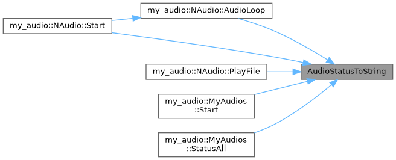

|
PROJECT_NAME 1.0.0
|
结构体 | |
| struct | AudioConfig |
| 音频设备初始化配置 更多... | |
| struct | AudioInfo |
| 音频设备描述信息（型号、固件版本等） 更多... | |
| class | BaseAudio |
| 音频设备纯虚基类 更多... | |
| class | MyAudios |
| 全局音频设备管理器（单例） 更多... | |
| class | NAudio |
| NAudio 厂商适配类 更多... | |
| class | NAudioCore |
| NAudio SDK 核心封装类 更多... | |
类型定义 | |
| using | DeviceStatusCallback = std::function< void(unsigned int devno, unsigned short status)> |
| 设备状态变更回调 | |
| using | PlayStatusCallback = std::function< void(unsigned char scene, unsigned char inst, unsigned int status)> |
| 播放状态变更回调 | |
枚举 | |
| enum class | AudioStatus { Working , Idle , Offline , Error } |
| 音频设备状态枚举 更多... | |
函数 | |
| std::string | AudioStatusToString (AudioStatus status) |
| 将 AudioStatus 转为可读中文字符串 | |
| using DeviceStatusCallback = std::function<void(unsigned int devno, unsigned short status)> |
设备状态变更回调
| devno | 设备编号 |
| status | 新状态码（DEVS_OFFLINE, DEVS_IDLE, DEVS_PLAYING 等） |
| using PlayStatusCallback = std::function<void(unsigned char scene, unsigned char inst, unsigned int status)> |
播放状态变更回调
| scene | 播放场景 |
| inst | 播放实例 |
| status | 播放状态（PS_STOP, PS_PLAYING, PS_PAUSE） |
|
strong |
|
inline |
将 AudioStatus 转为可读中文字符串
引用了 Error, Idle, Offline , 以及 Working.
被这些函数引用 NAudio::AudioLoop(), NAudio::PlayFile(), MyAudios::Start(), NAudio::Start() , 以及 MyAudios::StatusAll().
